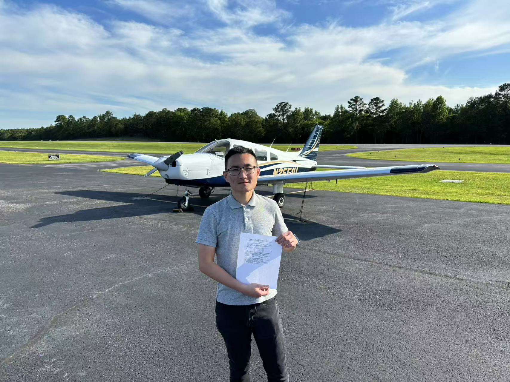
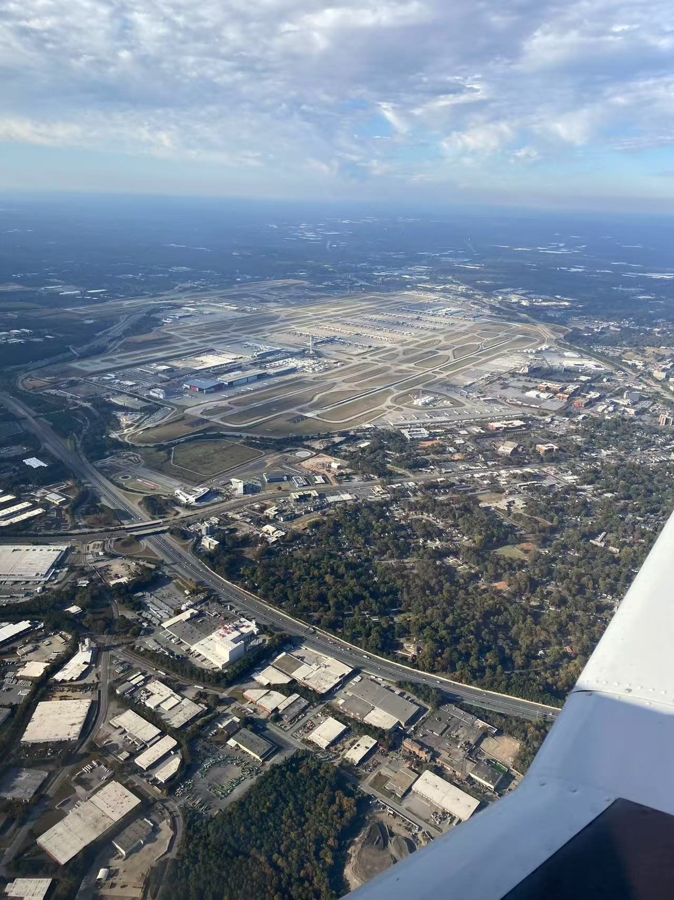
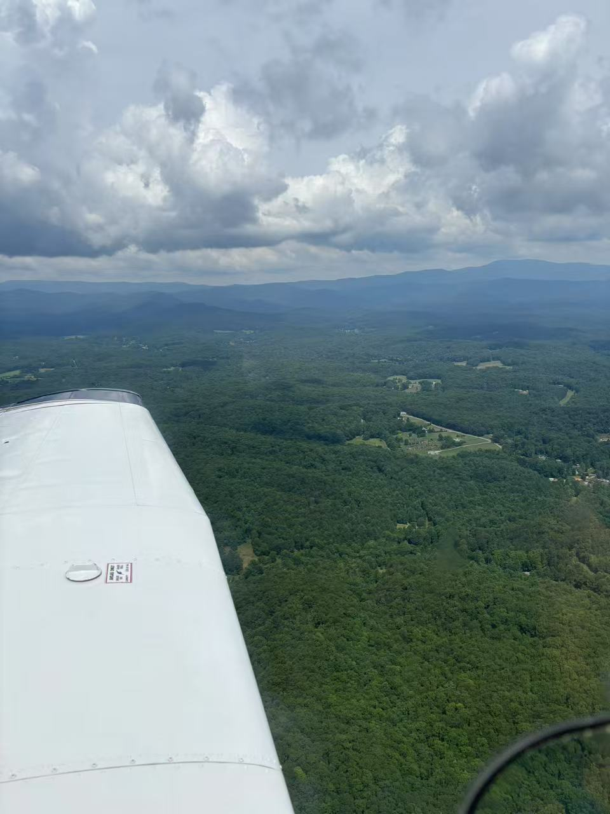

Training Timeline
- First Flight -- 2023 Feb 19
- First Solo Flight -- 2023 Aug 13 (35 flight hrs)
- Private Pilot Certification -- 2024 May 29 (93 flight hrs)

Passed my Private Pilot Checkride at Shelby County Airport (KEET), Alabama, USA
Photo Gallery
Here are some nice pics I have during my flights! (click to see the full size picture)

Cross Country Flying to KMLJ in an PA-28-161
Flying over KATL
Flying across the Blue Ridge Mountains near the Georgia-Tennessee border